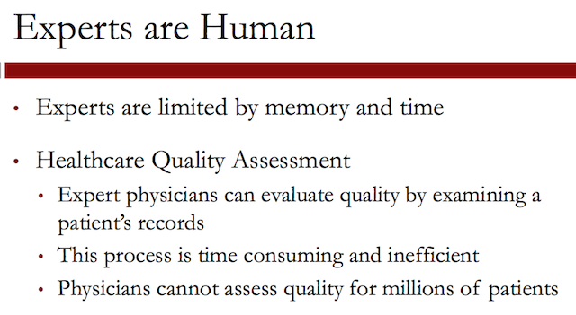
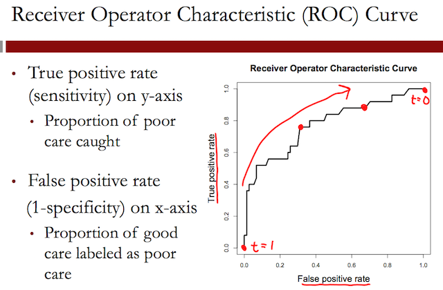

Unit 3 - Logistic Regression
Table of Contents
- 1. Modeling the Expert: An Introduction to Logistic Regression
- 1.1. Logistic Regression
- 1.2. Logistic Regression in R
- 1.3. Video 1: Replicating Expert Assessment
- 1.4. Video 2: Building the Dataset
- 1.5. Quick Question (2 points possible)
- 1.6. Video 3: Logistic Regression
- 1.7. Understanding the Logistic Regression Function
- 1.8. Quick Question (3 points possible)
- 1.9. Video 4: Logistic Regression in R
- 1.10. Quick Question (1 point possible)
- 1.11. Quick Question (1 point possible)
- 1.12. Video 5: Thresholding
- 1.13. The confusion matrix or classification matrix
- 1.14. Confusion matrices questions
- 1.15. Video 6: ROC Curves
- 1.16. Quick Question (2 points possible)
- 1.17. Video 7: Interpreting the Model
- 1.18. Quick Question (1 point possible)
- 1.19. Video 8: The Analytics Edge
- 2. The Framingham Heart Study: Evaluating Risk Factors to Save Lives
- 2.1. Video 1: The Framingham Heart Study
- 2.2. Quick Question (1 point possible)
- 2.3. Video 2: Risk Factors
- 2.4. Quick Question (2 points possible)
- 2.5. Video 3: - A Logistic Regression Model
- 2.6. Quick Question (2 points possible)
- 2.7. Video 4: Validating the Model
- 2.8. Quick Question (1 point possible)
- 2.9. Video 5: Interventions
- 2.10. Quick Question (1 point possible)
- 2.11. Video 6: Overall Impact
- 3. Election Forecasting: Predicting the Winner Before any Votes are Cast (Recitation)
Logistic Regression topics. For the course "MITx: 15.071x The Analytics Edge".
1 Modeling the Expert: An Introduction to Logistic Regression
1.1 Logistic Regression
The Method
Logistic regression extends the idea of linear regression to cases where the dependent variable, \(y\), only has two possible outcomes, called classes. Examples of dependent variables that could be used with logistic regression are predicting whether a new business will succeed or fail, predicting the approval or disapproval of a loan, and predicting whether a stock will increase or decrease in value. These are all called classification problems, since the goal is to figure out which class each observation belongs to.
Similar to linear regression, logistic regression uses a set of independent variables to make predictions, but instead of predicting a continuous value for the dependent variable, it instead predicts the probability of each of the possible outcomes, or classes.
Logistic regression consists of two steps. The first step is to compute the probability that an observation belongs to class 1, using the Logistic Response Function:
$$ P(y = 1) = \frac{1}{1 + e^{-(\beta_0 + \beta_1x_1 + \beta_2x_2 + \ldots + \beta_kx_k)}} $$
The coefficients, or \(\beta\) values, are selected to maximize the likelihood of predicting a high probability for observations actually belonging to class 1, and predicting a low probability for observations actually belonging to class 0.
In the second step of logistic regression, a threshold value is used to classify each observation into one of the classes. A common choice is \(0.5\), meaning that if \(P(y = 1) \geq 0.5\), the observation is classified into class 1, and if \(P(y = 1) < 0.5\), the observation is classified into class 0. Simply stated, each observation is classified into the class with the highest probability.
However, other threshold values can be chosen, and in some cases are more appropriate. The threshold value that should be selected often depends on error preferences. When the probabilities are converted into class predictions, two types of errors can be made: false positives, and false negatives. A false positive error is made when the model predicts class 1, but the observation actually belongs to class 0. A false negative error is made when the model predicts class 0, but the observation actually belongs to class 1. If a higher threshold value is selected, more false negative errors will be made. If a lower threshold value is selected, more false positive errors will be made.
One application where decision-makers often have an error preference is in disease prediction. Suppose you built a model to predict whether or not someone will develop heart disease in the next 10 years (like the model we saw in the Framingham Heart Study lecture). We will consider class 1 to be the outcome in which the person does develop heart disease, and class 0 the outcome in which the person does not develop heart disease. If you pick a high threshold, you will tend to make more false negative errors, which means that you predicted that the person would not develop heart disease, but they actually did. If you pick a lower threshold, you will tend to make more false positive errors, which means that you predicted they would develop heart disease, but they actually did not. In this case, a false positive error is often preferred. Unnecessary resources might be spent treating a patient who did not need to worry, but you did not let as many patients go untreated (which is what a false negative error does).
Now, let's consider spam filters. Almost every email provider has a built in spam filter that tries to detect whether or not an email message is spam. Let's classify spam messages as class 1 and non-spam messages as class 0. Then if we build a logistic regression model to predict spam, we will probably want to select a high threshold. Why? In this case, a false positive error means that we predicted a message was spam, and sent it to the spam folder, when it actually was not spam. We might have just sent an important email to the junk folder! On the other hand, a false negative error means that we predicted a message was not spam, when it actually was. This creates a slight annoyance for the user (since they have to delete the message from the inbox themselves) but at least an important message was not missed.
This error trade-off can be formalized with a Confusion Matrix or a Receiver Operator Characteristic Curve (ROC curve). A confusion matrix compares predicted classes with actual classes for a particular threshold value, while an ROC curve plots the false positive rate versus the true positive rate for all possible threshold values. The ROC curve motivates an important metric for classification problems: the AUC, or Area Under the Curve. The AUC of a model gives the area under the ROC curve, and is a number between 0 and 1. The higher the AUC, the more area under the ROC curve, and the better the model. The AUC of a model can be interpreted as the model's ability to distinguish between the two different classes. If the model were handed two random observations from the dataset, one belonging to one class and one belonging to the other class, the AUC gives the proportion of the time when the observation from class 1 has a higher predicted probability of being in class 1. If you were to just guess which observation was which, this would be an AUC of 0.5. So a model with an AUC greater than 0.5 is doing something smarter than just guessing, but we want the AUC of a model to be as close to 1 as possible.
1.2 Logistic Regression in R
Suppose the training data for your model is in a data frame called "TrainingData", consisting of your dependent variable "DependentVar", and your two independent variables "IndependentVar1" and "IndependentVar2". (If you just have one dataset, you can randomly split your data frame into a training set and testing set with the sample.split function.) Then you can build a logistic regression model with the following command:
LogModel = glm(DependentVar ~ IndependentVar1 + IndependentVar2,
data=TrainingData, family=binomial)
You can see the coefficients and other information about the model with the summary function:
summary(LogModel)
You can then create a vector of predictions for the training set and generate different confusion matrices with the predict() and table() functions:
TrainPredictions = predict(LogModel, type="response")
table(TrainingData$DependentVar, TrainPredictions >= 0.5)
table(TrainingData$DependentVar, TrainPredictions >= 0.3)
You can generate an ROC curve with the following commands (you first need to install and load the "ROCR" package):
ROC.Pred = prediction(TrainPredictions, TrainingData$DependentVar)
ROC.Perf = performance(ROC.Pred, "tpr", "fpr")
plot(ROC.Perf)
To add threshold labels and colors, replace the plot command with the following:
plot(ROC.Perf, colorize=TRUE, print.cutoffs.at=seq(0,1,by=0.1),
text.adj=c(-0.2,1.7))
The AUC of the model can be computed with the following command:
as.numeric(performance(ROC.Pred, "auc")@y.values)
To make predictions on a test set called "TestData", you can use the predict() function:
TestPredictions = predict(LogModel, newdata=TestData,
type="response")
You can then create confusion matrices, an ROC curve, and compute the AUC just like we did for the training set on the test set.
1.3 Video 1: Replicating Expert Assessment
We'll examine how analytics can model an expert, in this case a physician, in the context of assessing the quality of healthcare patients receive, and introduce a technique called logistic regression to achieve this objective.
The large scale problem:

Clearly, physicians cannot assess quality for millions of patients, and D2Hawkeye had, indeed, millions of patients who receive claims data on a monthly basis that the quality of them needs to be assessed.
So the key question is as follows. Can we develop analytics tools that replicate expert assessment on a large scale?
The goal is to learn from expert human judgment by developing a model, interpret the results of the model, and further adjust the model to improve predictability. The objective is to make predictions and evaluations on a large scale basis, to be able to process millions of assessing the health care quality for millions of people.
1.4 Video 2: Building the Dataset
So let us explain what claims data is. So medical claims are generated when a patient visits a doctor. Medical claims include diagnosis code, procedures codes, as well as costs.
Pharmacy claims involve drugs, the quantity of these drugs, the prescribing doctor, as well as the medication costs. Claims data are electronically available, they are standardized, they use well-established codes.
However, since humans generate them, they are not 100% accurate.

And often, under-reporting is common in the sense that it's a tedious job to record these claims, and as a result, often people under-report them. Also, claims for hospital visits can be vague.
In creating a data set, our objective was to assess quality, health care quality.

So we used a large health insurance claims database, and we randomly selected 131 diabetes patients. The ages ranged between 35 to 55 and the costs were in the neighborhood of $10,000 to $20,000.
The period in which these claims were recorded were September 1, 2003 to August 31, 2005.
An expert physician reviewed the claims and wrote descriptive notes, like "ongoing use of narcotics"; "only on Avandia, not a good first choice drug"; "had regular visits, mammogram, and immunizations"; "was given home testing supplies".
After this review, this expert physician rated the quality of care on a two-point scale, poor or good. Examples included, I'd say care was poor. Poorly treated diabetes. Not an eye exam, but overall I'd say high quality.
So based on these comments, we extracted variables. The dependent variable was the quality of care. The independent variables involve the ongoing use of narcotics; only on Avandia, not a good first choice drug; had regular visits, mammogram, and immunizations; was given home testing supplies.

Overall, the independent variables involved diabetes treatment variables, patient demographics, health care utilization, providers, claims, and prescriptions. The dependent variable was modeled as a binary variable – 1 for low-quality care and 0 for high-quality care.
This is by its nature a categorical variable. It only takes two possible values. We have seen linear regression as a way of predicting continuous outcomes.

1.5 Quick Question (2 points possible)
1.5.1 Question a
Which of the following dependent variables are categorical? (Select all that apply.)
[X]Deciding whether to buy, sell, or hold a stock[ ]The weekly revenue of a company[X]The winner of an election with two candidates[X]The day of the week with the highest revenue[ ]The number of daily car thefts in New York City[X]Whether or not revenue will exceed $50,000
1.5.1.1 Answer
Explanation
The weekly revenue of a company is not categorical, since it has a large number of possible values, on a continuous range. The number of daily car thefts in New York City is also not categorical because the number of car thefts could range from 0 to hundreds.
On the other hand, the other options each have a limited number of possible outcomes.
1.5.2 Question b
Which of the following dependent variables are binary? (Select all that apply.)
[ ]Deciding whether to buy, sell, or hold a stock[ ]The weekly revenue of a company[X]The winner of an election with two candidates[ ]The day of the week with the highest revenue[ ]The number of daily car thefts in New York City[X]Whether or not revenue will exceed $50,000
1.5.2.1 Answer
Explanation
The only variables with two possible outcomes are the winner of an election with two candidates, and whether or not revenue will exceed $50,000.
1.6 Video 3: Logistic Regression
Logistic regression predicts the probability of the outcome variable being true. In this example, a logistic regression model would predict the probability that the patient is receiving poor care. Or if we denote the PoorCare variable by \(y\), the probability that \(y = 1\).
So by predicting the probability that \(y = 1\), we also get the probability that \(y = 0\). Just like in linear regression, we have a set of independent variables, \(x_1\) through \(x_k\), where \(k\) is the total number of independent variables we have.
Then to predict the probability that \(y = 1\), we use what's called the Logistic Response Function. This seems like a complicated, nonlinear equation, but you can see the familiar linear regression equation in this Logistic Response Function.
The Logistic Response Function is used to produce a number between \(0\) and \(1\).
1.7 Understanding the Logistic Regression Function
This plot shows the logistic response function for different values of the linear regression piece. The logistic response function always takes values between \(0\) and \(1\), which makes sense, since it equals a probability.
A positive coefficient value for a variable increases the linear regression piece, which increases the probability that \(y = 1\), or increases the probability of poor care. On the other hand, a negative coefficient value for a variable decreases the linear regression piece, which in turn decreases the probability that \(y = 1\), or increases the probability of good care.
The coefficients, or betas, are selected to predict a high probability for the actual poor care cases, and to predict a low probability for the actual good care cases.
Another useful way to think about the logistic response function is in terms of Odds, like in gambling.

If you substitute the Logistic Response Function for the probabilities in the Odds equation.

This helps us understand how the coefficients, or betas, affect our prediction of the probability. A positive \(\beta\) value increases the Logit, which in turn increases the Odds of \(1\). A negative \(\beta\) value decreases the Logit, which in turn, decreases the Odds of one.
1.8 Quick Question (3 points possible)
Suppose the coefficients of a logistic regression model with two independent variables are as follows:
$$ \beta_0 = -1.5,~ \beta_1 = 3,~\beta_2 = -0.5 $$
And we have an observation with the following values for the independent variables:
$$ x_1 = 1,~x_2 = 5 $$
1.8.1 Question a
What is the value of the Logit for this observation? Recall that the Logit is log(Odds).
$$ log(Odds) = \beta_0 + \beta_1 x_1 + \beta_2 x_2 $$
beta0 <- -1.5; beta1 <- 3; beta2 <- -0.5; x1 <- 1; x2 <- 5 logit <- beta0 + (beta1 * x1) + (beta2 * x2) writeLines("\n :: The value of logit is:") logit
:: The value of logit is: [1] -1
1.8.1.1 Answer
Explanation
The Logit is just log(Odds), and looks like the linear regression equation. So the Logit is -1.5 + 3*1 - 0.5*5 = -1.
1.8.2 Question b
What is the value of the Odds for this observation? Note that you can compute e^x, for some number x, in your R console by typing exp(x). The function exp() computes the exponential of its argument.
writeLines("\n :: The value of odds is:")
exp(logit)
:: The value of odds is: [1] 0.3678794
1.8.2.1 Answer
Explanation
Using the value of the Logit from the previous question, we have that Odds = e^(-1) = 0.3678794.
1.8.3 Question c
What is the value of P(y = 1) for this observation?
P <- 1 / (1 + exp(-logit)) writeLines("\n :: The probability of P(y = 1) is:") P
:: The probability of P(y = 1) is: [1] 0.2689414
1.8.3.1 Answer
Explanation
Using the Logistic Response Function, we can compute that P(y = 1) = 1/(1 + e^(-Logit)) = 1/(1 + e^(1)) = 0.2689414.
1.9 Video 4: Logistic Regression in R

This plot shows two of our independent variables, the number of office visits on the x-axis and the number of narcotics prescribed on the y-axis. Each point is an observation or a patient in our data set. The red points are patients who received poor care, and the green points are patients who received good care.
It's hard to see a trend in the data by just visually inspecting it. But it looks like maybe more office visits and more narcotics, or data points to the right of this line, are more likely to have poor care.
We'll be using the dataset quality.csv to build a logistic regression model in R. Please download this file to follow along.
An R script file with all of the commands used in this lecture can be downloaded here.
1.9.1 Download the data sets
In this part we can download the data
library(parallel) if(!file.exists("../data")) { dir.create("../data") } fileUrl <- "https://courses.edx.org/asset-v1:MITx+15.071x_2a+2T2015+type@asset+block/quality.csv" fileName <- "quality.csv" dataPath <- "../data" filePath <- paste(dataPath, fileName, sep = "/") if(!file.exists(filePath)) { download.file(fileUrl, destfile = filePath, method = "curl") } list.files("../data")
[1] "AirlinesCluster.csv" "AnonymityPoll.csv" [3] "baseball.csv" "BoeingStock.csv" [5] "boston.csv" "ClaimsData.csv" [7] "ClaimsData.csv.zip" "climate_change.csv" [9] "clinical_trial.csv" "ClusterMeans.ods" [11] "CocaColaStock.csv" "CountryCodes.csv" [13] "CPSData.csv" "dailykos.csv" [15] "eBayiPadTest.csv" "eBayiPadTrain.csv" [17] "edges.csv" "emails.csv" [19] "energy_bids.csv" "flower.csv" [21] "FluTest.csv" "FluTrain.csv" [23] "framingham.csv" "gerber.csv" [25] "GEStock.csv" "healthy.csv" [27] "households.csv" "IBMStock.csv" [29] "intl.csv" "intlall.csv" [31] "loans_imputed.csv" "loans.csv" [33] "MetroAreaCodes.csv" "movieLens.txt" [35] "murders.csv" "mvt.csv" [37] "mvtWeek1.csv" "NBA_test.csv" [39] "NBA_train.csv" "parole.csv" [41] "pisa2009test.csv" "pisa2009train.csv" [43] "PollingData_Imputed.csv" "PollingData.csv" [45] "PollingImputed.csv" "ProcterGambleStock.csv" [47] "quality.csv" "README.md" [49] "SampleSubmission.csv" "songs.csv" [51] "stevens.csv" "StocksCluster.csv" [53] "stopwords.txt" "SubmissionLR2.csv" [55] "SubmissionSimpleLogV1.csv" "tumor.csv" [57] "tweets.csv" "tweetsU7.csv" [59] "USDA.csv" "users.csv" [61] "WHO_Europe.csv" "WHO.csv" [63] "WHOu7.csv" "wiki.csv" [65] "wine_test.csv" "wine.csv"
1.9.2 Load the data set
writeLines(" Loading data into their data frames.") quality <- read.table("../data/quality.csv", sep = ",", header = TRUE) str(quality) summary(quality)
Loading data into their data frames.
'data.frame': 131 obs. of 14 variables:
$ MemberID : int 1 2 3 4 5 6 7 8 9 10 ...
$ InpatientDays : int 0 1 0 0 8 2 16 2 2 4 ...
$ ERVisits : int 0 1 0 1 2 0 1 0 1 2 ...
$ OfficeVisits : int 18 6 5 19 19 9 8 8 4 0 ...
$ Narcotics : int 1 1 3 0 3 2 1 0 3 2 ...
$ DaysSinceLastERVisit: num 731 411 731 158 449 ...
$ Pain : int 10 0 10 34 10 6 4 5 5 2 ...
$ TotalVisits : int 18 8 5 20 29 11 25 10 7 6 ...
$ ProviderCount : int 21 27 16 14 24 40 19 11 28 21 ...
$ MedicalClaims : int 93 19 27 59 51 53 40 28 20 17 ...
$ ClaimLines : int 222 115 148 242 204 156 261 87 98 66 ...
$ StartedOnCombination: logi FALSE FALSE FALSE FALSE FALSE FALSE ...
$ AcuteDrugGapSmall : int 0 1 5 0 0 4 0 0 0 0 ...
$ PoorCare : int 0 0 0 0 0 1 0 0 1 0 ...
MemberID InpatientDays ERVisits OfficeVisits
Min. : 1.0 Min. : 0.000 Min. : 0.000 Min. : 0.00
1st Qu.: 33.5 1st Qu.: 0.000 1st Qu.: 0.000 1st Qu.: 7.00
Median : 66.0 Median : 0.000 Median : 1.000 Median :12.00
Mean : 66.0 Mean : 2.718 Mean : 1.496 Mean :13.23
3rd Qu.: 98.5 3rd Qu.: 3.000 3rd Qu.: 2.000 3rd Qu.:18.50
Max. :131.0 Max. :30.000 Max. :11.000 Max. :46.00
Narcotics DaysSinceLastERVisit Pain TotalVisits
Min. : 0.000 Min. : 6.0 Min. : 0.00 Min. : 0.00
1st Qu.: 0.000 1st Qu.:207.0 1st Qu.: 1.00 1st Qu.: 8.00
Median : 1.000 Median :641.0 Median : 8.00 Median :15.00
Mean : 4.573 Mean :480.6 Mean : 15.56 Mean :17.44
3rd Qu.: 3.000 3rd Qu.:731.0 3rd Qu.: 23.00 3rd Qu.:22.50
Max. :59.000 Max. :731.0 Max. :104.00 Max. :69.00
ProviderCount MedicalClaims ClaimLines StartedOnCombination
Min. : 5.00 Min. : 11.00 Min. : 20.0 Mode :logical
1st Qu.:15.00 1st Qu.: 25.50 1st Qu.: 83.5 FALSE:125
Median :20.00 Median : 37.00 Median :120.0 TRUE :6
Mean :23.98 Mean : 43.24 Mean :142.9 NA's :0
3rd Qu.:30.00 3rd Qu.: 49.50 3rd Qu.:185.0
Max. :82.00 Max. :194.00 Max. :577.0
AcuteDrugGapSmall PoorCare
Min. : 0.000 Min. :0.0000
1st Qu.: 0.000 1st Qu.:0.0000
Median : 1.000 Median :0.0000
Mean : 2.695 Mean :0.2519
3rd Qu.: 3.000 3rd Qu.:0.5000
Max. :71.000 Max. :1.0000
We'll be using the number of office visits and the number of prescriptions for narcotics that the patient had.
1.9.3 Data dictionary
The variables in the dataset quality.csv are as follows:
- MemberID numbers the patients from 1 to 131, and is just an identifying number.
- InpatientDays is the number of inpatient visits, or number of days the person spent in the hospital.
- ERVisits is the number of times the patient visited the emergency room.
- OfficeVisits is the number of times the patient visited any doctor's office.
- Narcotics is the number of prescriptions the patient had for narcotics.
- DaysSinceLastERVisit is the number of days between the patient's last emergency room visit and the end of the study period (set to the length of the study period if they never visited the ER).
- Pain is the number of visits for which the patient complained about pain.
- TotalVisits is the total number of times the patient visited any healthcare provider.
- ProviderCount is the number of providers that served the patient.
- MedicalClaims is the number of days on which the patient had a medical claim.
- ClaimLines is the total number of medical claims.
- StartedOnCombination is whether or not the patient was started on a combination of drugs to treat their diabetes (TRUE or FALSE).
- AcuteDrugGapSmall is the fraction of acute drugs that were refilled quickly after the prescription ran out.
- PoorCare is the outcome or dependent variable, and is equal to 1 if the patient had poor care, and equal to 0 if the patient had good care.
In this part we learned how to use the sample.split() function from
the caTools package to split data for a classification problem,
balancing the positive and negative observations in the training and
testing sets.
If you wanted to instead split a data frame data, where the dependent
variable is a continuous outcome (this was the case for all the
datasets we used last week), you could instead use the sample()
function. Here is how to select \(70\%\) of observations for the training
set (called train) and \(30\%\) of observations for the testing set
(called test):
spl = sample(1:nrow(data), size=0.7 * nrow(data))
train = data[spl,]
test = data[-spl,]
1.9.4 Logistic Regression model building
In a classification problem, a standard baseline method is to just predict the most frequent outcome for all observations.
Since good care is more common than poor care, in this case, we would predict that all patients are receiving good care. If we did this, we would get \(98\) out of the \(131\) observations correct, or have an accuracy of about \(75\%\).
So our baseline model has an accuracy of \(75\%\). This is what we'll try to beat with our logistic regression model.
we only have one data set. So we want to randomly split our data set into a training set and testing set so that we'll have a test set to measure our out-of-sample accuracy.
writeLines("\n :: Install and load caTools package (Only once)") ## install.packages('caTools', repos='http://cran.rstudio.com/') library(caTools) writeLines("\n :: Randomly split data") set.seed(88) split <- sample.split(quality$PoorCare, SplitRatio = 0.75) head(split)
:: Install and load caTools package (Only once) :: Randomly split data [1] TRUE TRUE TRUE TRUE FALSE TRUE
Since sample.split randomly splits your data, it could split it differently for each of us. To make sure that we all get the same split, we'll set our seed. This initializes the random number generator.
Sample.split randomly splits the data. But it also makes sure that
the outcome variable is well-balanced in each piece. We saw earlier
that about \(75\%\) of our patients are receiving good care.
This function makes sure that in our training set, \(75\%\) of our patients are receiving good care and in our testing set \(75\%\) of our patients are receiving good care.
1.9.5 Building the training and the testing sets
writeLines("\n :: Create training and testing sets") qualityTrain <- subset(quality, split == TRUE) qualityTest <- subset(quality, split == FALSE) writeLines("\n :: The number of observations in the training set") nrow(qualityTrain) writeLines("\n :: The number of observations in the testing set") nrow(qualityTest)
:: Create training and testing sets :: The number of observations in the training set [1] 99 :: The number of observations in the testing set [1] 32
We are ready to build a logistic regression model using OfficeVisits and Narcotics as independent variables.
writeLines("\n :: First Logistic Regression Model") QualityLog <- glm(PoorCare ~ OfficeVisits + Narcotics, data=qualityTrain, family = binomial) summary(QualityLog)
:: First Logistic Regression Model
Call:
glm(formula = PoorCare ~ OfficeVisits + Narcotics, family = binomial,
data = qualityTrain)
Deviance Residuals:
Min 1Q Median 3Q Max
-2.06303 -0.63155 -0.50503 -0.09689 2.16686
Coefficients:
Estimate Std. Error z value Pr(>|z|)
(Intercept) -2.64613 0.52357 -5.054 4.33e-07 ***
OfficeVisits 0.08212 0.03055 2.688 0.00718 **
Narcotics 0.07630 0.03205 2.381 0.01728 *
---
Signif. codes: 0 ‘***’ 0.001 ‘**’ 0.01 ‘*’ 0.05 ‘.’ 0.1 ‘ ’ 1
(Dispersion parameter for binomial family taken to be 1)
Null deviance: 111.888 on 98 degrees of freedom
Residual deviance: 89.127 on 96 degrees of freedom
AIC: 95.127
Number of Fisher Scoring iterations: 4
This gives the estimate values for the coefficients, or the betas, for our logistic regression model. We see here that the coefficients for OfficeVisits and Narcotics are both positive, which means that higher values in these two variables are indicative of poor care as we suspected from looking at the data.
We also see that both of these variables have at least one star, meaning that they're significant in our model.
The preferred model is the one with the minimum AIC.
1.9.6 Predictions in the training set
writeLines("\n :: Make predictions on training set") predictTrain <- predict(QualityLog, type = "response")
:: Make predictions on training set
The second argument which is type="response". This tells the predict function to give us probabilities. Let's take a look at the statistical summary of our predictions.
writeLines("\n :: Analyze predictions")
summary(predictTrain)
tapply(predictTrain, qualityTrain$PoorCare, mean)
:: Analyze predictions
Min. 1st Qu. Median Mean 3rd Qu. Max.
0.06623 0.11910 0.15970 0.25250 0.26760 0.98460
0 1
0.1894512 0.4392246
Since we're expecting probabilities, all of the numbers should be between zero and one. And we see that the minimum value is about \(0.07\) and the maximum value is \(0.98\).
Let's see if we're predicting higher probabilities for the actual poor
care cases as we expect. Using the tapply function. So we see that
for all of the true poor care cases, we predict an average probability
of about \(0.44\). And all of the true good care cases, we predict an
average probability of about \(0.19\).
So this is a good sign, because it looks like we're predicting a higher probability for the actual poor care cases.
1.10 Quick Question (1 point possible)
In R, create a logistic regression model to predict "PoorCare" using the independent variables "StartedOnCombination" and "ProviderCount". Use the training set we created in the previous video to build the model.
Note: If you haven't already loaded and split the data in R, please run these commands in your R console to load and split the data set. Remember to first navigate to the directory where you have saved "quality.csv".
quality = read.csv("quality.csv")
install.packages("caTools")
library(caTools)
set.seed(88)
split = sample.split(quality$PoorCare, SplitRatio = 0.75)
qualityTrain = subset(quality, split == TRUE)
qualityTest = subset(quality, split == FALSE)
Then recall that we built a logistic regression model to predict PoorCare using the R command:
writeLines("\n :: create a logistic regression model to predict PoorCare using the independent variables StartedOnCombination and ProviderCount:") QualityLog2 <- glm(PoorCare ~ StartedOnCombination + ProviderCount, data = qualityTrain, family = binomial) summary(QualityLog2)
:: create a logistic regression model to predict PoorCare using
the independent variables StartedOnCombination and ProviderCount:
Call:
glm(formula = PoorCare ~ StartedOnCombination + ProviderCount,
family = binomial, data = qualityTrain)
Deviance Residuals:
Min 1Q Median 3Q Max
-1.61826 -0.72782 -0.64555 -0.08407 1.94662
Coefficients:
Estimate Std. Error z value Pr(>|z|)
(Intercept) -2.00097 0.55097 -3.632 0.000282 ***
StartedOnCombinationTRUE 1.95230 1.22342 1.596 0.110541
ProviderCount 0.03366 0.01983 1.697 0.089706 .
---
Signif. codes: 0 ‘***’ 0.001 ‘**’ 0.01 ‘*’ 0.05 ‘.’ 0.1 ‘ ’ 1
(Dispersion parameter for binomial family taken to be 1)
Null deviance: 111.89 on 98 degrees of freedom
Residual deviance: 104.37 on 96 degrees of freedom
AIC: 110.37
Number of Fisher Scoring iterations: 4
You will need to adjust this command to answer this question, and then
look at the summary(QualityLog) output.
What is the coefficient for StartedOnCombination?
1.10.1 Answer
If you look at the output of summary(Model), the value of the
coefficient (Estimate) for StartedOnCombination is \(1.95230\).
1.11 Quick Question (1 point possible)
StartedOnCombination is a binary variable, which equals \(1\) if the patient is started on a combination of drugs to treat their diabetes, and equals \(0\) if the patient is not started on a combination of drugs. All else being equal, does this model imply that starting a patient on a combination of drugs is indicative of poor care, or good care?
1.11.1 Answer
Explanation
The coefficient value is positive, meaning that positive values of the variable make the outcome of \(1\) more likely. This corresponds to Poor Care.
1.12 Video 5: Thresholding
Often, we want to make an actual prediction. Should we predict \(1\) for poor care, or should we predict \(0\) for good care? We can convert the probabilities to predictions using what's called a threshold value, \(t\).
If the probability of poor care is greater than this threshold value, \(t\), we predict poor quality care. But if the probability of poor care is less than the threshold value, \(t\), then we predict good quality care.
What value should we pick for the threshold, t?
The threshold value, \(t\), is often selected based on which errors are better. You might be thinking that making no errors is better, which is, of course, true.
But it's rare to have a model that predicts perfectly, so you're bound to make some errors. There are two types of errors that a model can make –ones where you predict \(1\), or poor care, but the actual outcome is \(0\), and ones where you predict \(0\), or good care, but the actual outcome is \(1\).
- The large \(t\) selection approach would detect the patients receiving
the worst care and prioritize them for intervention.
- The small \(t\) selection approach would detect all patients who might
be receiving poor care.
Some decision-makers often have a preference for one type of error over the other, which should influence the threshold value they pick.
1.13 The confusion matrix or classification matrix

The rows are labeled with the actual outcome, and the columns are labeled with the predicted outcome.
Each entry of the table gives the number of data observations that fall into that category. So the number of true negatives, or TN, is the number of observations that are actually good care and for which we predict good care.
The true positives, or TP, is the number of observations that are actually poor care and for which we predict poor care. These are the two types that we get correct.
The false positives, or FP, are the number of data points for which we predict poor care, but they're actually good care. And the false negatives, or FN, are the number of data points for which we predict good care, but they're actually poor care.
- The Sensitivity is often called the true positive rate and measures the percentage of actual poor care cases that we classify correctly.
- The Specificity is called the true negative rate and measures the percentage of actual good care cases that we classify correctly.
A model with a higher threshold will have a lower sensitivity and a higher specificity. A model with a lower threshold will have a higher sensitivity and a lower specificity.
writeLines("\n :: Confusion matrix for threshold of 0.5:") table(qualityTrain$PoorCare, predictTrain > 0.5) writeLines("\n :: Sensitivity:") 10/25 writeLines("\n :: Specificity:") 70/74
:: Confusion matrix for threshold of 0.5:
FALSE TRUE
0 70 4
1 15 10
:: Sensitivity:
[1] 0.4
:: Specificity:
[1] 0.9459459
So you can see here that for \(70\) cases, we predict good care and they actually received good care, and for \(10\) cases, we predict poor care, and they actually received poor care.
We make \(4\) mistakes where we say poor care and it's actually good care, and we make \(15\) mistakes where we say good care, but it's actually poor care.
Now we can experiment with a higher threshold:
writeLines("\n :: Confusion matrix for threshold of 0.7") table(qualityTrain$PoorCare, predictTrain > 0.7) writeLines("\n :: Sensitivity:") 8/25 writeLines("\n :: Specificity:") 73/74
:: Confusion matrix for threshold of 0.7
FALSE TRUE
0 73 1
1 17 8
:: Sensitivity:
[1] 0.32
:: Specificity:
[1] 0.9864865
So by increasing the threshold, our sensitivity went down and our specificity went up.
If now we choose a small threshold:
writeLines("\n :: Confusion matrix for threshold of 0.2") table(qualityTrain$PoorCare, predictTrain > 0.2) writeLines("\n :: Sensitivity:") 16/25 writeLines("\n :: Specificity:") 54/74
:: Confusion matrix for threshold of 0.2
FALSE TRUE
0 54 20
1 9 16
:: Sensitivity:
[1] 0.64
:: Specificity:
[1] 0.7297297
So with the lower threshold, our sensitivity went up, and our specificity went down.
But which threshold should we pick? Maybe \(0.4\) is better, or \(0.6\). How do we decide?
1.14 Confusion matrices questions
This question asks about the following two confusion matrices:
1.14.1 Confusion Matrix #1:
| Predicted = 0 | Predicted = 1 | |
|---|---|---|
| Actual = 0 | 15 | 10 |
| Actual = 1 | 5 | 20 |
TP <- 20; TN <- 15; FP <- 10; FN <- 5; writeLines("\n :: Sensitivity:") Sensitivity <- TP / (TP + FN) Sensitivity writeLines("\n :: Specificity:") Specificity <- TN / (TN + FP) Specificity
:: Sensitivity: [1] 0.8 :: Specificity: [1] 0.6
1.14.1.1 Answer
Explanation
The sensitivity of a confusion matrix is the true positives, divided by the true positives plus the false negatives. In this case, it is 20/(20+5) = 0.8
Explanation
The specificity of a confusion matrix is the true negatives, divided by the true negatives plus the false positives. In this case, it is 15/(15+10) = 0.6
1.14.2 Confusion Matrix #2:
| Predicted = 0 | Predicted = 1 | |
|---|---|---|
| Actual = 0 | 20 | 5 |
| Actual = 1 | 10 | 15 |
TP <- 15; TN <- 20; FP <- 5; FN <- 10; writeLines("\n :: Sensitivity:") Sensitivity <- TP / (TP + FN) Sensitivity writeLines("\n :: Specificity:") Specificity <- TN / (TN + FP) Specificity
:: Sensitivity: [1] 0.6 :: Specificity: [1] 0.8
1.14.2.1 Answer
The Sensitivity in the matrix 1 was \(0.8\) and was \(0.6\) in the second matrix, then the threshold went up.
Explanation
We predict the outcome 1 less often in Confusion Matrix #2. This means we must have increased the threshold.
1.15 Video 6: ROC Curves
Picking a good threshold value is often challenging. A Receiver Operator Characteristic curve, or ROC curve, can help you decide which value of the threshold is best.

The sensitivity or true positive rate is in the \(y\) axis and the false positive rate, or 1 minus the specificity, is given on the x-axis.
- The line shows how these two outcome measures vary with different threshold values. The ROC curve always starts at the point \((0, 0)\). This corresponds to a threshold value of \(1\). If you have a threshold of \(1\), you will not catch any poor care cases, or have a sensitivity of \(0\). But you will correctly label of all the good care cases, meaning you have a false positive rate of \(0\).
- The ROC curve always ends at the point \((1, 1)\), which corresponds to a threshold value of \(0\). If you have a threshold of \(0\), you'll catch all of the poor care cases, or have a sensitivity of \(1\), but you'll label all of the good care cases as poor care cases too, meaning you have a false positive rate of \(1\).
- The threshold decreases as you move from \((0, 0)\) to \((1, 1)\). At the point \((0, 0.4)\), or about here, you're correctly labeling about \(40\%\) of the poor care cases with a very small false positive rate.
- On the other hand, at the point \((0.6, 0.9)\), you're correctly labeling about \(90\%\) of the poor care cases, but have a false positive rate of \(60\%\).
- In the middle, around \((0.3, 0.8)\), you're correctly labeling about 80% of the poor care cases, with a \(30\%\) false positive rate.
- The higher the threshold, or closer to \((0, 0)\), the higher the specificity and the lower the sensitivity. The lower the threshold, or closer to \((1,1)\), the higher the sensitivity and lower the specificity.
So which threshold value should you pick? You should select the best threshold for the trade-off you want to make.
- If you're more concerned with having a high specificity or low false positive rate, pick the threshold that maximizes the true positive rate while keeping the false positive rate really low. A threshold around \((0.1, 0.5)\) on this ROC curve looks like a good choice in this case.
- On the other hand, if you're more concerned with having a high sensitivity or high true positive rate, pick a threshold that minimizes the false positive rate but has a very high true positive rate. A threshold around \((0.3, 0.8)\) looks like a good choice in this case.

Recall that we made predictions on our training set and called them predictTrain. We'll use these predictions to create our ROC curve. First, we'll call the prediction function of ROCR. We'll call the output of this function ROCRpred, and then use the prediction function.
This function takes two arguments. The first is the predictions we made with our model, which we called predictTrain. The second argument is the true outcomes of our data points, which in our case, is qualityTrain$PoorCare.
Now, we need to use the performance function. This defines what we'd like to plot on the x and y-axes of our ROC curve. We'll call the output of this ROCRperf, and use the performance function, which takes as arguments the output of the prediction function, and then what we want on the x and y-axes.
writeLines("\n :: Install package only once") ## install.packages('ROCR', repos='http://cran.rstudio.com/') library(ROCR) writeLines("\n :: Prediction function") ROCRpred = prediction(predictTrain, qualityTrain$PoorCare) writeLines("\n :: Performance function") ROCRperf = performance(ROCRpred, "tpr", "fpr")
:: Install package only once
Loading required package: gplots
Attaching package: ‘gplots’
The following object is masked from ‘package:stats’:
lowess
:: Prediction function
:: Performance function
Figure 22: Add threshold labels to better pick up a right value of t
1.16 Quick Question (2 points possible)
1.16.1 Question a
Given this ROC curve, which threshold would you pick if you wanted to correctly identify a small group of patients who are receiving the worst care with high confidence?
1.16.1.1 Answer
Explanation
The threshold \(0.7\) is best to identify a small group of patients who are receiving the worst care with high confidence, since at this threshold we make very few false positive mistakes, and identify about 35% of the true positives.
The threshold \(t = 0.8\) is not a good choice, since it makes about the same number of false positives, but only identifies \(10\%\) of the true positives. The thresholds \(0.2\) and \(0.3\) both identify more of the true positives, but they make more false positive mistakes, so our confidence decreases.
1.16.2 Question b
Which threshold would you pick if you wanted to correctly identify half of the patients receiving poor care, while making as few errors as possible?
1.16.2.1 Answer
Explanation
The threshold \(0.3\) is the best choice in this scenerio. The threshold \(0.2\) also identifies over half of the patients receiving poor care, but it makes many more false positive mistakes. The thresholds \(0.7\) and \(0.8\) don't identify at least half of the patients receiving poor care.
1.17 Video 7: Interpreting the Model
Multicollinearity occurs when the various independent variables are correlated, and this might confuse the coefficients– the betas– in the model. So tests to address that involve checking the correlations of independent variables.
If they are excessively high, this would mean that there might be multicollinearity, and you have to potentially revisit the model, as well as whether the signs of the coefficients make sense.
Is the coefficient beta positive or negative? If it agrees with intuition, then multicollinearity has not been a problem, but if intuition suggests a different sign, this might be a sign of multicollinearity.
The next important element is significance. So how do we interpret the results, and how do we understand whether we have a good model or not? For that purpose, let's take a look at what is called Area Under the Curve, or AUC for short.
So the Area Under the Curve shows an absolute measure of quality of prediction– in this particular case, \(77.5\%\), which means that, given that the perfect score is \(100\%\), so this is like a B, whereas, as we'll see later, a \(50\%\) score, which is pure guessing, is a \(50\%\) rate of success.
So the area under the curve gives an absolute measure of quality, and it's less affected by various benchmarks. So it illustrates how accurate the model is on a more absolute sense.
1.17.1 So what is a good AUC?
The area on the right shows the maximum possible of a perfect prediction, whereas the area on this curve now– it is \(0.5\), and it's pure guessing. Other outcome measures that are important for us to discuss is the so-called confusion matrix.

1.17.2 Other outcome measures
Other outcome measures that are important for us to discuss is the so-called confusion matrix.
The actual class is \(0\) means, in our example, good quality of care, and actual \(class = 1\) means poor quality of care, whereas the predicted \(class = 0\) means that will predict good quality, and the predicted \(class = 1\) means that we predict poor quality.
So if \(N\) is the number of observations, the overall accuracy is basically the number of true negatives and true positives divided by \(N\). It's basically the terms in the diagonal of this two by two matrix divided by the total observations.
The overall error rate is the terms off-diagonal– the false positives, plus the false negatives, divided by the total number of observations.
An important component is the so-called sensitivity, and sensitivity is TP, the true positives, whenever we predict poor quality, and indeed it is poor quality, divided by TP, these true positives, plus FN, which is the total number of cases of poor quality.
So this is the total number of times that we predict poor quality, and it is, indeed, poor quality, versus the total number of times the actual quality is, in fact, poor.
And specificity is TN, true negatives, the number of times we predict the quality is good, and, in fact, the quality is good, divided by this number, TN, plus false positives.
1.17.3 Making predictions
So in our test, we utilized 32 cases, and the R command that makes the statements about the quality of a prediction out-of-sample is illustrated here in the slide.
So in that way, we make predictions about probabilities, of course, simply because logistic regression makes predictions about probabilities, and then we transform them to a binary outcome– the quality is good, or the quality is poor– using a threshold.
In this particular example, we used a threshold value of \(0.3\), and in doing so, we obtain the following confusion matrix.
predictTest <- predict(QualityLog, type = "response", newdata = qualityTest) writeLines("\n :: Confusion matrix for threshold of 0.3:") table(qualityTest$PoorCare, predictTest > 0.3) TN <- 19; TP <- 6; FN <- 2; FP <- 5 writeLines("\n :: Overall accuracy:") OverallAccuracy <- (TN + TP) / nrow(qualityTest) OverallAccuracy writeLines("\n :: Sensitivity:") Sensitivity <- TP / (TP + FN) Sensitivity writeLines("\n :: Specificity:") Specificity <- TN / (TN + FP) Specificity writeLines("\n :: Overall error rate:") OverallErrorRate <- (FP + FN) / nrow(qualityTest) OverallErrorRate writeLines("\n :: False Negative Error Rate:") FalseNegativeErrorRate <- FN / (TP + FN) FalseNegativeErrorRate writeLines("\n :: False Positive Error Rate:") FalsePositiveErrorRate <- FP / ( TN + FP) FalsePositiveErrorRate
:: Confusion matrix for threshold of 0.3:
FALSE TRUE
0 19 5
1 2 6
:: Overall accuracy:
[1] 0.78125
:: Sensitivity:
[1] 0.75
:: Specificity:
[1] 0.7916667
:: Overall error rate:
[1] 0.21875
:: False Negative Error Rate:
[1] 0.25
:: False Positive Error Rate:
[1] 0.2083333
Notice, if you compare this model with making always– let's say one alternative is to say we predict good care all the time. In that situation, we will be correct 19 plus 5, 24 times, versus 25 times, in our case. But notice that predicting always good care does not capture the dynamics of what is happening, versus the logistic regression model that is far more intelligent in capturing these effects.
1.18 Quick Question (1 point possible)
IMPORTANT NOTE: This question uses the original model with the independent variables OfficeVisits and Narcotics. Be sure to use this model, instead of the model you built in Quick Question 4.
Compute the test set predictions in R by running the command:
predictTest = predict(QualityLog, type="response", newdata=qualityTest)
You can compute the test set AUC by running the following two commands in R:
ROCRpredTest <- prediction(predictTest, qualityTest$PoorCare) auc <- as.numeric(performance(ROCRpredTest, "auc")@y.values) writeLines("\n :: The AUC of the test set is:") auc
:: The AUC of the test set is: [1] 0.7994792
1.18.1 Question a
What is the AUC of this model on the test set?
1.18.1.1 Answer
$$ AUC = 0.7994792 $$
The AUC of a model has the following nice interpretation: given a random patient from the dataset who actually received poor care, and a random patient from the dataset who actually received good care, the AUC is the perecentage of time that our model will classify which is which correctly.
1.19 Video 8: The Analytics Edge
Conclusions
- An expert-trained model can accurately identify diabetics receiving low-quality care
- Out-of-sample accuracy of \(78\%\)
- Identifies most patients receiving poor care
- In practice, the probabilities returned by the logistic regression model can be used to prioritize patients for intervention
- Electronic medical records could be used in the future
So a model like the one we built can be used to analyze literally millions of records. Whereas a human can only accurately analyze rather small amounts of information. So clearly such a model allows significantly larger scalability.
Of course models do not replace expert judgement. However, models provide a way to translate expert judgement to a reproducible, testable prediction methodology that has significantly higher scalability, as we discussed. And of course experts can continuously improve and refine the model, as we have seen in this lecture.
- While humans can accurately analyze small amounts of information, models allow larger scalability
- Models do not replace expert judgment
- Experts can improve and refine the model
- Models can integrate assessments of many experts into one final unbiased and unemotional prediction.
2 The Framingham Heart Study: Evaluating Risk Factors to Save Lives
2.1 Video 1: The Framingham Heart Study
We'll describe the Framingham Heart Study, one of the most important epidemiological studies ever conducted, and the underlying analytics that led to our current understanding of cardiovascular disease.
To motivate how the study affected our understanding of blood pressure today, we describe the case of Franklin Delano Roosevelt, FDR for short, who was the President of the United States from 1933 to 1945.
He died while President on April 12, 1945. Before the presidency, FDR's blood pressure was 140/100. Today, healthy blood pressure is considered to be less than 120/80.
So therefore, 140/100 is today considered high blood pressure. One year before his death, his blood pressure was 210/120. Today this is called hypertensive crisis, and emergency care is needed.
On the other hand, FDR's personal physician said a moderate degree of atherosclerosis although no more than normal for a man of his age. Two months before his death, his blood pressure was 260/150, and the day of his death was 300/190.
2.1.1 FDR’s Blood Pressure
- Before presidency, blood pressure of 140/100
- Healthy blood pressure is less than 120/80
- Today, this is already considered high blood pressure
- One year before death, 210/120
- Today, this is called Hypertensive Crisis, and emergency care is needed
- FDR’s personal physician:
"A moderate degree of arteriosclerosis, although no more than normal for a man of his age"
- Two months before death: 260/150 - Day of death: 300/190
2.1.2 Early Misconceptions
- High blood pressure dubbed essential hypertension
- Considered important to force blood through arteries
- Considered harmful to lower blood pressure
- Today, we know better
"Today, presidential blood pressure numbers like FDR’s would send the country’s leading doctors racing down hallways … whisking the nation’s leader into the cardiac care unit of Bethesda Naval Hospital."
– Daniel Levy, Framingham Heart Study Director
2.1.3 How did we Learn?
So in 1948, the Framingham Heart Study started. The study included 5,209 patients, aged 30 to 59. Patients were given a questionnaire and an examination every two years.
During this examination, their physical characteristics were recorded, their behavioral characteristics, as well as test results. Exams and questions expanded over time.
2.2 Quick Question (1 point possible)
Why was the city of Framingham, Massachusetts selected for this study? Select all that apply.
[ ]It represented all types of people in the United States.[X]It had an appropriate size.[X]It had a stable population to observe over time.[ ]It contained an abnormally large number of people with heart disease.[X]The doctors and residents in Framingham were willing to participate.
2.2.1 Answer
Explanation
The reasons for Framingham being selected for this study are listed on Slide 4 of the previous video: it had an appropriate size, it had a stable population, and the doctors and residents in the town were willing to participate. However, the city did not represent all types of people in the United States (we'll see later in the lecture how to extend the model to different populations) and there were not an abnormally large number of people with heart disease.
2.3 Video 2: Risk Factors
We'll be using analytical models to prevent heart disease. The first step is to identify risk factors, or the independent variables, that we will use in our model. Then, using data, we'll create a logistic regression model to predict heart disease.
Using more data, we'll validate our model to make sure it performs well out of sample and on different populations than the training set population. Lastly, we'll discuss how medical interventions can be defined using the model.
We'll be predicting the 10-year risk of coronary heart disease or CHD.
This is in part due to earlier detection and monitoring partly because of the Framingham Heart Study. Before building a logistic regression model, we need to identify the independent variables we want to use.
When predicting the risk of a disease, we want to identify what are known as risk factors. These are the variables that increase the chances of developing a disease. The term risk factors was actually coined by William Kannell and Roy Dawber from the Framingham Heart Study.

In this lecture, we'll focus on the risk factors that they collected data for in the original data collection for the Framingham Heart Study.
Variables (2)
Variables (3)
2.4 Quick Question (2 points possible)
2.4.1 Question a
Are risk factors the independent variables or the dependent variables in our model?
2.4.1.1 Answer
[X]Independent Variables[ ]Dependent Variables[ ]Neither
Explanation
Risk factors are the independent variables in our model, and are what we will use to predict the dependent variable.
2.4.2 Question b
In many situations, a dataset is handed to you and you are tasked with discovering which variables are important. But for the Framingham Heart Study, the researchers had to collect data from patients. In a situation like this one, where data needs to be collected by the researchers, should the potential risk factors be defined before or after the data is collected?
2.4.2.1 Answer
[X]Before[ ]After
Explanation
The researchers should first hypothesize potential risk factors, and then collect data corresponding to those risk factors. Of course, they could always define more risk factors later and collect more data, but this data would take longer to collect.
2.5 Video 3: - A Logistic Regression Model
In this video, we'll use the dataset framingham.csv to build a logistic regression model. Please download this dataset to following along. This data comes from the BioLINCC website.
An R script file with all of the commands used in this lecture can be downloaded here.
2.5.1 Download the data sets
In this part we can download the data
library(parallel) if(!file.exists("../data")) { dir.create("../data") } fileUrl <- "https://courses.edx.org/asset-v1:MITx+15.071x_2a+2T2015+type@asset+block/framingham.csv" fileName <- "framingham.csv" dataPath <- "../data" filePath <- paste(dataPath, fileName, sep = "/") if(!file.exists(filePath)) { download.file(fileUrl, destfile = filePath, method = "curl") } list.files("../data")
[1] "AirlinesCluster.csv" "AnonymityPoll.csv" [3] "baseball.csv" "BoeingStock.csv" [5] "boston.csv" "ClaimsData.csv" [7] "ClaimsData.csv.zip" "climate_change.csv" [9] "clinical_trial.csv" "ClusterMeans.ods" [11] "CocaColaStock.csv" "CountryCodes.csv" [13] "CPSData.csv" "dailykos.csv" [15] "eBayiPadTest.csv" "eBayiPadTrain.csv" [17] "edges.csv" "emails.csv" [19] "energy_bids.csv" "flower.csv" [21] "FluTest.csv" "FluTrain.csv" [23] "framingham.csv" "gerber.csv" [25] "GEStock.csv" "healthy.csv" [27] "households.csv" "IBMStock.csv" [29] "intl.csv" "intlall.csv" [31] "loans_imputed.csv" "loans.csv" [33] "MetroAreaCodes.csv" "movieLens.txt" [35] "murders.csv" "mvt.csv" [37] "mvtWeek1.csv" "NBA_test.csv" [39] "NBA_train.csv" "parole.csv" [41] "pisa2009test.csv" "pisa2009train.csv" [43] "PollingData_Imputed.csv" "PollingData.csv" [45] "PollingImputed.csv" "ProcterGambleStock.csv" [47] "quality.csv" "README.md" [49] "SampleSubmission.csv" "songs.csv" [51] "stevens.csv" "StocksCluster.csv" [53] "stopwords.txt" "SubmissionLR2.csv" [55] "SubmissionSimpleLogV1.csv" "tumor.csv" [57] "tweets.csv" "tweetsU7.csv" [59] "USDA.csv" "users.csv" [61] "WHO_Europe.csv" "WHO.csv" [63] "WHOu7.csv" "wiki.csv" [65] "wine_test.csv" "wine.csv"
2.5.2 Load the data set
writeLines(" Loading data into their data frames.") framingham <- read.table("../data/framingham.csv", sep = ",", header = TRUE) str(framingham) summary(framingham)
Loading data into their data frames.
'data.frame': 4240 obs. of 16 variables:
$ male : int 1 0 1 0 0 0 0 0 1 1 ...
$ age : int 39 46 48 61 46 43 63 45 52 43 ...
$ education : int 4 2 1 3 3 2 1 2 1 1 ...
$ currentSmoker : int 0 0 1 1 1 0 0 1 0 1 ...
$ cigsPerDay : int 0 0 20 30 23 0 0 20 0 30 ...
$ BPMeds : int 0 0 0 0 0 0 0 0 0 0 ...
$ prevalentStroke: int 0 0 0 0 0 0 0 0 0 0 ...
$ prevalentHyp : int 0 0 0 1 0 1 0 0 1 1 ...
$ diabetes : int 0 0 0 0 0 0 0 0 0 0 ...
$ totChol : int 195 250 245 225 285 228 205 313 260 225 ...
$ sysBP : num 106 121 128 150 130 ...
$ diaBP : num 70 81 80 95 84 110 71 71 89 107 ...
$ BMI : num 27 28.7 25.3 28.6 23.1 ...
$ heartRate : int 80 95 75 65 85 77 60 79 76 93 ...
$ glucose : int 77 76 70 103 85 99 85 78 79 88 ...
$ TenYearCHD : int 0 0 0 1 0 0 1 0 0 0 ...
male age education currentSmoker
Min. :0.0000 Min. :32.00 Min. :1.000 Min. :0.0000
1st Qu.:0.0000 1st Qu.:42.00 1st Qu.:1.000 1st Qu.:0.0000
Median :0.0000 Median :49.00 Median :2.000 Median :0.0000
Mean :0.4292 Mean :49.58 Mean :1.979 Mean :0.4941
3rd Qu.:1.0000 3rd Qu.:56.00 3rd Qu.:3.000 3rd Qu.:1.0000
Max. :1.0000 Max. :70.00 Max. :4.000 Max. :1.0000
NA's :105
cigsPerDay BPMeds prevalentStroke prevalentHyp
Min. : 0.000 Min. :0.00000 Min. :0.000000 Min. :0.0000
1st Qu.: 0.000 1st Qu.:0.00000 1st Qu.:0.000000 1st Qu.:0.0000
Median : 0.000 Median :0.00000 Median :0.000000 Median :0.0000
Mean : 9.006 Mean :0.02962 Mean :0.005896 Mean :0.3106
3rd Qu.:20.000 3rd Qu.:0.00000 3rd Qu.:0.000000 3rd Qu.:1.0000
Max. :70.000 Max. :1.00000 Max. :1.000000 Max. :1.0000
NA's :29 NA's :53
diabetes totChol sysBP diaBP
Min. :0.00000 Min. :107.0 Min. : 83.5 Min. : 48.0
1st Qu.:0.00000 1st Qu.:206.0 1st Qu.:117.0 1st Qu.: 75.0
Median :0.00000 Median :234.0 Median :128.0 Median : 82.0
Mean :0.02571 Mean :236.7 Mean :132.4 Mean : 82.9
3rd Qu.:0.00000 3rd Qu.:263.0 3rd Qu.:144.0 3rd Qu.: 90.0
Max. :1.00000 Max. :696.0 Max. :295.0 Max. :142.5
NA's :50
BMI heartRate glucose TenYearCHD
Min. :15.54 Min. : 44.00 Min. : 40.00 Min. :0.0000
1st Qu.:23.07 1st Qu.: 68.00 1st Qu.: 71.00 1st Qu.:0.0000
Median :25.40 Median : 75.00 Median : 78.00 Median :0.0000
Mean :25.80 Mean : 75.88 Mean : 81.96 Mean :0.1519
3rd Qu.:28.04 3rd Qu.: 83.00 3rd Qu.: 87.00 3rd Qu.:0.0000
Max. :56.80 Max. :143.00 Max. :394.00 Max. :1.0000
NA's :19 NA's :1 NA's :388
Now that we have identified a set of risk factors, let's use this data to predict the 10 year risk of CHD. First, we'll randomly split our patients into a training set and a testing set.
Then, we'll use logistic regression to predict whether or not a patient experienced CHD within 10 years of the first examination. Keep in mind that all of the risk factors were collected at the first examination of the patients.
After building our model, we'll evaluate the predictive power of the model on the test set.
writeLines("\n :: Load the library caTools") library(caTools) writeLines("\n :: Randomly split the data into training and testing sets") set.seed(1000) split <- sample.split(framingham$TenYearCHD, SplitRatio = 0.65) writeLines("\n :: Split up the data using subset") train <- subset(framingham, split==TRUE) test <- subset(framingham, split==FALSE)
:: Load the library caTools :: Randomly split the data into training and testing sets :: Split up the data using subset
Here, we'll put \(65\%\) of the data in the training set. When you have more data like we do here, you can afford to put less data in the training set and more in the testing set.
This will increase our confidence in the ability of the model to extend to new data since we have a larger test set, and still give us enough data in the training set to create our model. You typically want to put somewhere between \(50\%\) and \(80\%\) of the data in the training set.
Now we're ready to build our logistic regression model using the training set.
writeLines("\n :: Logistic Regression Model") framinghamLog <- glm(TenYearCHD ~ ., data = train, family=binomial) summary(framinghamLog)
:: Logistic Regression Model
Call:
glm(formula = TenYearCHD ~ ., family = binomial, data = train)
Deviance Residuals:
Min 1Q Median 3Q Max
-1.8487 -0.6007 -0.4257 -0.2842 2.8369
Coefficients:
Estimate Std. Error z value Pr(>|z|)
(Intercept) -7.886574 0.890729 -8.854 < 2e-16 ***
male 0.528457 0.135443 3.902 9.55e-05 ***
age 0.062055 0.008343 7.438 1.02e-13 ***
education -0.058923 0.062430 -0.944 0.34525
currentSmoker 0.093240 0.194008 0.481 0.63080
cigsPerDay 0.015008 0.007826 1.918 0.05514 .
BPMeds 0.311221 0.287408 1.083 0.27887
prevalentStroke 1.165794 0.571215 2.041 0.04126 *
prevalentHyp 0.315818 0.171765 1.839 0.06596 .
diabetes -0.421494 0.407990 -1.033 0.30156
totChol 0.003835 0.001377 2.786 0.00533 **
sysBP 0.011344 0.004566 2.485 0.01297 *
diaBP -0.004740 0.008001 -0.592 0.55353
BMI 0.010723 0.016157 0.664 0.50689
heartRate -0.008099 0.005313 -1.524 0.12739
glucose 0.008935 0.002836 3.150 0.00163 **
---
Signif. codes: 0 ‘***’ 0.001 ‘**’ 0.01 ‘*’ 0.05 ‘.’ 0.1 ‘ ’ 1
(Dispersion parameter for binomial family taken to be 1)
Null deviance: 2020.7 on 2384 degrees of freedom
Residual deviance: 1792.3 on 2369 degrees of freedom
(371 observations deleted due to missingness)
AIC: 1824.3
Number of Fisher Scoring iterations: 5
In the glm() logistic regression model generation you must be
careful doing this with data sets that have identifying variables
like a patient ID or name since you wouldn't want to use these as
independent variables.
It looks like male, age, prevalent stroke, total cholesterol, systolic blood pressure, and glucose are all significant in our model. Cigarettes per day and prevalent hypertension are almost significant. All of the significant variables have positive coefficients, meaning that higher values in these variables contribute to a higher probability of 10-year coronary heart disease.
Now, let's use this model to make predictions on our test set.
writeLines("\n :: Predictions on the test set") predictTest <- predict(framinghamLog, type = "response", newdata = test) writeLines("\n :: Confusion matrix with threshold of 0.5") table(test$TenYearCHD, predictTest > 0.5) writeLines("\n :: Accuracy") (1069 + 11) / (1069 + 6 + 187 + 11) writeLines("\n :: Baseline accuracy") (1069 + 6) / (1069 + 6 + 187 + 11)
:: Predictions on the test set
:: Confusion matrix with threshold of 0.5
FALSE TRUE
0 1069 6
1 187 11
:: Accuracy
[1] 0.8483896
:: Baseline accuracy
[1] 0.8444619
- With a threshold of \(0.5\), we predict an outcome of \(1\), the true column, very rarely. This means that our model rarely predicts a 10-year CHD risk above \(50\%\).
- So the accuracy of our model is about \(84.8\%\).
- We need to compare this to the accuracy of a simple baseline method. The more frequent outcome in this case is \(0\), so the baseline method would always predict \(0\) or no CHD.
So the baseline model would get an accuracy of about \(84.4\%\). So our model barely beats the baseline in terms of accuracy. But do we still have a valuable model by varying the threshold? Let's compute the out-of-sample AUC.
writeLines("\n :: Test set AUC ") library(ROCR) ROCRpred <- prediction(predictTest, test$TenYearCHD) as.numeric(performance(ROCRpred, "auc")@y.values)
:: Test set AUC [1] 0.7421095
This will give us the AUC value on our testing set. So we have an AUC of about 74% on our test set, which means that the model can differentiate between low risk patients and high risk patients pretty well.
2.5.3 Conclusions
We were able to build a logistic regression model with a few interesting properties.
We saw that more cigarettes per day, higher cholesterol, higher systolic blood pressure, and higher glucose levels all increased risk.
2.6 Quick Question (2 points possible)
In the previous video, we computed the following confusion matrix for our logistic regression model on our test set with a threshold of 0.5:
FALSE TRUE 0 1069 6 1 187 11
Using this confusion matrix, answer the following questions.
TN <- 1069; FP <- 6 FN <- 187; TP <- 11 writeLines("\n :: The Sensitivity is:") Sensitivity <- TP / (TP + FN) Sensitivity writeLines("\n :: The Specificity is:") Specificity <- TN / (TN + FP) Specificity
:: The Sensitivity is: [1] 0.05555556 :: The Specificity is: [1] 0.9944186
2.6.1 Question a
What is the sensitivity of our logistic regression model on the test set, using a threshold of 0.5?
2.6.1.1 Answer
0.05555556
2.6.2 Question b
What is the specificity of our logistic regression model on the test set, using a threshold of 0.5?
2.6.2.1 Answer
0.9944186
Explanation
Using this confusion matrix, we can compute that the sensitivity is 11/(11+187) and the specificity is 1069/(1069+6).
2.7 Video 4: Validating the Model
We mention that the Framingham Risk Model was tested on diverse cohorts. The original Framingham Risk Model was actually computed by a different sort of regression, called a Cox Proportional Hazards Model. This method is different but related to logistic regression, and it will return a similar estimate of 10-year CHD risk.
So far, we have used what is known as internal validation to test our model. This means that we took the data from one set of patients and split them into a training set and a testing set. While this confirms that our model is good at making predictions for patients in the Framingham Heart Study population, it's unclear if the model generalizes to other populations.
2.7.1 External validation
There have been many studies to test the Framingham model from the influential 1998 paper on diverse cohorts. This table shows a sample of studies that tested the model on populations with different races.
The researchers for each study collected the same risk factors used in the original study, predicted CHD using the Framingham Heart Study model, and then analyzed how accurate the model was for that population.
For some populations, the Framingham model was accurate.
For the ARIC study that tested the model with black men, this figure shows a bar graph of how the Framingham predictions compare with the actual results.
The gray bars are the predictions. And the black bars are the actual outcomes. The patients are sorted on the x-axis by predicted risk and on the y-axis by the percentage of patients in each group who actually developed CHD.
For the most part, the predictions are accurate. There's one group for which the model under-predicted the risk and one group for which the model over-predicted the risk.
For the HHS study with Japanese-American men, the Framingham model systematically over-predicts a risk of CHD.
The model can be recalibrated for this population by scaling down the predictions. This changes the predicted risk but not the order of the predictions.
This changes the predicted risk but not the order of the predictions. The high risk patients still have higher predictions than the lower risk patients. This allows the model to have more accurate risk estimates for populations not included in the original group of patients. For models that will be used on different populations than the one used to create the model, external validation is critical.
2.8 Quick Question (1 point possible)
For which of the following models should external validation be used?
Consider both the population used to train the model, and the population that the model will be used on. (Select all that apply.)
[X]A model to predict obesity risk. Data from a random sample of California residents was used to build the model, and we want to use the model to predict the obesity risk of all United States residents.[ ]A model to predict the stress of MIT students. Data from a random sample of MIT students was used to build the model, and we want to use the model to predict the stress level of all MIT students.[X]A model to predict the probability of a runner winning a marathon. Data from all runners in the Boston Marathon was used to build the model, and we want use the model to predict the probability of winning for all people who run marathons.
2.8.1 Answer
Explanation
In the first and third models, we are using a special sub-population to build the model. While we can use the model for that sub-population, we should use external validation to test the model on other populations. The second model uses data from a special sub-population, but the model is only intended for that sub-population, so external validation is not necessary.
2.9 Video 5: Interventions
We next discuss interventions suggested by the model developed for the Framingham Heart Study. The first intervention has to do with drugs to lower blood pressure.
In FDR's time, hypertension drugs were too toxic for practical use. But in the 1950s, the diuretic chlorothiazide was developed, and the Framingham Heart Study gave Ed Freis the evidence needed to argue for testing effects for blood pressure drugs.
2.9.1 First intervention and business
2.9.2 Second intervention
Another intervention had to do with– to lower cholesterol.
2.10 Quick Question (1 point possible)
In Video 3, we built a logistic regression model and found that the following variables were significant (or almost significant) for predicting ten year risk of CHD: male, age, number of cigarettes per day, whether or not the patient previously had a stroke, whether or not the patient is currently hypertensive, total cholesterol level, systolic blood pressure, and blood glucose level. Which one of the following variables would be the most dramatically affected by a behavioral intervention? HINT: Think about how much control the patient has over each of the variables.
[ ]Male[ ]Age[X]Number of Cigarettes per day[ ]Previously had a Stroke[ ]Hypertensive[ ]Total Cholesterol Level[ ]Systolic Blood Pressure[ ]Blood Glucose Level
2.10.1 Answer
Explanation
The number of cigarettes smoked per day would be the most dramatically affected by a behavioral intervention. This is a variable that the patient has the ability to control the most.
2.11 Video 6: Overall Impact
Let us next examine the impact that the Framingham Heart Study had through the years. So the graph on the right shows the number of papers written every year using data from the Framingham Study as a function of time, and we observe the very significant increase in the number of such publications.
Altogether, there has been 2,400 studies written using the Framingham data. During the years, many other risk factors were evaluated. Obesity, exercise, psychological, and social issues. In fact, the Texas Heart Institute Journal named the Framingham Heart Study as the top 10 cardiology advance of the 20th century.
2.11.1 Online tool
In addition to the study, there has been an online tool that assesses the risk for your 10-year risk of having a heart attack.
So how about new research directions and challenges that the study is facing?
A very important impact of the Framingham Heart Study is the development of clinical decision rules.
And the graph shows the clinical prediction rules published as a function of the year from 1960s to today. And you observe that more than 70,000 published rules, clinical decision rules, have been published across medicine, and you observe that the rate of publication is increasing.
So these clinical decision rules are developed using patient and disease characteristics, and then observed test results from patients that can assess the effectiveness of such rules.
3 Election Forecasting: Predicting the Winner Before any Votes are Cast (Recitation)
We'll be using polling data from the months leading up to a presidential election to predict that election's winner. We'll go over how to build logistic regression models in R, how to select the variables to include in those models, and how to evaluate the model predictions.
3.1 Video 1: Election Prediction
The topic of this recitation is election forecasting, which is the art and science of predicting the winner of an election before any votes are actually cast using polling data from likely voters. In this recitation, we are going to look at the United States presidential election. In the United States, a president is elected every four years.
And while there are a number of different political parties in the US, generally there are only two competitive candidates.
There's the Republican candidate, who tends to be more conservative, and the Democratic candidate, who's more liberal. So for instance a recent Republican president was George W. Bush, and a recent Democratic president was Barack Obama.
Now while in many countries the leader of the country is elected using the simple candidate who receives the largest number of votes across the entire country is elected, in the United States it's significantly more complicated.
There are 50 states in the United States, and each is assigned a number of electoral votes based on its population.
So for instance, the most populous state, California, in 2012 had nearly 20 times the number of electoral votes as the least populous states.
And these number of electoral votes are reassigned periodically based on changes of populations between states. Within a given state in general, the system is winner take all in the sense that the candidate who receives the most vote in that state gets all of its electoral votes.
And then across the entire country, the candidate who receives the most electoral votes wins the entire presidential election.
Now while it seems like a somewhat subtle distinction, the electoral college versus the simple popular vote model, it can have very significant consequences on the outcome of the election.
As an example, let's look at the 2000 presidential election between George W. Bush and Al Gore.
As we can see on the right here, Al Gore received more than 500,000 more votes across the entire country than George W. Bush in terms of the popular vote. But in terms of the electoral vote, because of how those votes were distributed, George Bush actually won the election because he received five more electoral votes than Al Gore.
So our goal will be to use polling data that's collected from likely voters before the election to predict the winner in each state, and therefore to enable us to predict the winner of the entire election in the electoral college system.
While election prediction has long attracted some attention, there's been a particular interest in the problem for the 2012 presidential election, when then-New York Times columnist Nate Silver took on the task of predicting the winner in each state.
3.1.1 The data set
Each row in the data set represents a state in a particular election year. And the dependent variable, which is called Republican, is a binary outcome. It's \(1\) if the Republican won that state in that particular election year, and a \(0\) if a Democrat won.
The independent variables, again, are related to polling data in that state. So for instance, the Rasmussen and SurveyUSA variables are related to two major polls that are assigned across many different states in the United States.
And it represents the percentage of voters who said they were likely to vote Republican minus the percentage who said they were likely to vote Democrat.
So for instance, if the variable SurveyUSA in our data set has value \(-6\), it means that \(6\%\) more voters said they were likely to vote Democrat than said they were likely to vote Republican in that state.
DiffCount counts the number of all the polls leading up to the election that predicted a Republican winner in the state, minus the number of polls that predicted a Democratic winner.
And PropR, or proportion Republican, has the proportion of all those polls leading up to the election that predicted a Republican winner.
3.2 Video 2: Dealing with Missing Data
In this recitation, we will be using the dataset PollingData.csv. Please download this dataset to your computer, and save it in a location that you can easily navigate to in R. This data comes from RealClearPolitics.com.
An R script file with all of the commands used in this lecture can be downloaded here.
IMPORTANT NOTE: On some operating systems, the imputed results will be slightly different even if you set the random seed. This is just due to the randomess involved in the multiple imputation process. We've provided the imputed data here: PollingData_Imputed.csv. If your results are not matching after the imputation, you can use this dataset instead.
3.2.1 Download the data sets
In this part we can download the data
library(parallel) if(!file.exists("../data")) { dir.create("../data") } fileUrl <- "https://courses.edx.org/asset-v1:MITx+15.071x_2a+2T2015+type@asset+block/PollingData.csv" fileName <- "PollingData.csv" dataPath <- "../data" filePath <- paste(dataPath, fileName, sep = "/") if(!file.exists(filePath)) { download.file(fileUrl, destfile = filePath, method = "curl") } list.files("../data")
[1] "AirlinesCluster.csv" "AnonymityPoll.csv" [3] "baseball.csv" "BoeingStock.csv" [5] "boston.csv" "ClaimsData.csv" [7] "ClaimsData.csv.zip" "climate_change.csv" [9] "clinical_trial.csv" "ClusterMeans.ods" [11] "CocaColaStock.csv" "CountryCodes.csv" [13] "CPSData.csv" "dailykos.csv" [15] "eBayiPadTest.csv" "eBayiPadTrain.csv" [17] "edges.csv" "emails.csv" [19] "energy_bids.csv" "flower.csv" [21] "FluTest.csv" "FluTrain.csv" [23] "framingham.csv" "gerber.csv" [25] "GEStock.csv" "healthy.csv" [27] "households.csv" "IBMStock.csv" [29] "intl.csv" "intlall.csv" [31] "loans_imputed.csv" "loans.csv" [33] "MetroAreaCodes.csv" "movieLens.txt" [35] "murders.csv" "mvt.csv" [37] "mvtWeek1.csv" "NBA_test.csv" [39] "NBA_train.csv" "parole.csv" [41] "pisa2009test.csv" "pisa2009train.csv" [43] "PollingData_Imputed.csv" "PollingData.csv" [45] "PollingImputed.csv" "ProcterGambleStock.csv" [47] "quality.csv" "README.md" [49] "SampleSubmission.csv" "songs.csv" [51] "stevens.csv" "StocksCluster.csv" [53] "stopwords.txt" "SubmissionLR2.csv" [55] "SubmissionSimpleLogV1.csv" "tumor.csv" [57] "tweets.csv" "tweetsU7.csv" [59] "USDA.csv" "users.csv" [61] "WHO_Europe.csv" "WHO.csv" [63] "WHOu7.csv" "wiki.csv" [65] "wine_test.csv" "wine.csv"
3.2.2 Load the data set
writeLines(" Loading data into their data frames.") polling <- read.table("../data/PollingData.csv", sep = ",", header = TRUE) str(polling) table(polling$Year) summary(polling)
Loading data into their data frames.
'data.frame': 145 obs. of 7 variables:
$ State : Factor w/ 50 levels "Alabama","Alaska",..: 1 1 2 2 3 3 3 4 4 4 ...
$ Year : int 2004 2008 2004 2008 2004 2008 2012 2004 2008 2012 ...
$ Rasmussen : int 11 21 NA 16 5 5 8 7 10 NA ...
$ SurveyUSA : int 18 25 NA NA 15 NA NA 5 NA NA ...
$ DiffCount : int 5 5 1 6 8 9 4 8 5 2 ...
$ PropR : num 1 1 1 1 1 ...
$ Republican: int 1 1 1 1 1 1 1 1 1 1 ...
2004 2008 2012
50 50 45
State Year Rasmussen SurveyUSA
Arizona : 3 Min. :2004 Min. :-41.0000 Min. :-33.0000
Arkansas : 3 1st Qu.:2004 1st Qu.: -8.0000 1st Qu.:-11.7500
California : 3 Median :2008 Median : 1.0000 Median : -2.0000
Colorado : 3 Mean :2008 Mean : 0.0404 Mean : -0.8243
Connecticut: 3 3rd Qu.:2012 3rd Qu.: 8.5000 3rd Qu.: 8.0000
Florida : 3 Max. :2012 Max. : 39.0000 Max. : 30.0000
(Other) :127 NA's :46 NA's :71
DiffCount PropR Republican
Min. :-19.000 Min. :0.0000 Min. :0.0000
1st Qu.: -6.000 1st Qu.:0.0000 1st Qu.:0.0000
Median : 1.000 Median :0.6250 Median :1.0000
Mean : -1.269 Mean :0.5259 Mean :0.5103
3rd Qu.: 4.000 3rd Qu.:1.0000 3rd Qu.:1.0000
Max. : 11.000 Max. :1.0000 Max. :1.0000
What we see is that while in the 2004 and 2008 elections, all 50 states have data reported, in 2012, only 45 of the 50 states have data. And actually, what happened here is that pollsters were so sure about the five missing states that they didn't perform any polls in the months leading up to the 2012 election.
So since these states are particularly easy to predict, we feel pretty comfortable moving forward, making predictions just for the 45 remaining states.
So the second thing that we notice is that there are these NA values, which signify missing data. So to get a handle on just how many values are missing, we can use our summary function on the polling data frame.
We see that for the Rasmussen polling data and also for the SurveyUSA polling data, there are a decent number of missing values.
3.2.3 Simple approaches to deal with missing data
There are a number of simple approaches to dealing with missing data.
- One would be to delete observations that are missing at least one variable value. Unfortunately, in this case, that would result in throwing away more than \(50\%\) of the observations. And further, we want to be able to make predictions for all states, not just for the ones that report all of their variable values.
- Another observation would be to remove the variables that have missing values, in this case, the Rasmussen and SurveyUSA variables. However, we expect Rasmussen and SurveyUSA to be qualitatively different from aggregate variables, such as DiffCount and PropR, so we want to retain them in our data set.
- A third approach would be to fill the missing data points with average values. So for Rasmussen and SurveyUSA, the average value for a poll would be very close to zero across all the times with it reported, which is roughly a tie between the Democrat and Republican candidate. However, if PropR is very close to one or zero, we would expect the Rasmussen or SurveyUSA values that are currently missing to be positive or negative, respectively.
3.2.4 Multiple Imputation
This leads to a more complicated approach called multiple imputation in which we fill in the missing values based on the non-missing values for an observation. So for instance, if the Rasmussen variable is reported and is very negative, then a missing SurveyUSA value would likely be filled in as a negative value as well.
3.2.5 Multiple imputation procedure
writeLines("\n :: Install and load mice package (Only once)") ## install.packages('mice', repos='http://cran.rstudio.com/') library(mice)
:: Install and load mice package (Only once) Loading required package: Rcpp Loading required package: lattice mice 2.22 2014-06-10
So for our multiple imputation to be useful, we have to be able to find out the values of our missing variables without using the outcome of Republican. So, what we're going to do here is we're going to limit our data frame to just the four polling related variables before we actually perform multiple imputation.
So we're going to create a new data frame called simple, and that's just going to be our original polling data frame limited to Rasmussen, SurveyUSA, PropR, and DiffCount.
writeLines("\n :: Multiple imputation") simple <- polling[c("Rasmussen", "SurveyUSA", "PropR", "DiffCount")] summary(simple)
:: Multiple imputation Rasmussen SurveyUSA PropR DiffCount Min. :-41.0000 Min. :-33.0000 Min. :0.0000 Min. :-19.000 1st Qu.: -8.0000 1st Qu.:-11.7500 1st Qu.:0.0000 1st Qu.: -6.000 Median : 1.0000 Median : -2.0000 Median :0.6250 Median : 1.000 Mean : 0.0404 Mean : -0.8243 Mean :0.5259 Mean : -1.269 3rd Qu.: 8.5000 3rd Qu.: 8.0000 3rd Qu.:1.0000 3rd Qu.: 4.000 Max. : 39.0000 Max. : 30.0000 Max. :1.0000 Max. : 11.000 NA's :46 NA's :71
So again, multiple imputation, if you ran it twice, you would get different values that were filled in. So, to make sure that everybody following along gets the same results from imputation, we're going to set the random seed to a value. It doesn't really matter what value we pick, so we'll just pick my favorite number, 144.
set.seed(144)
imputed <- complete(mice(simple))
summary(imputed)
iter imp variable 1 1 Rasmussen SurveyUSA 1 2 Rasmussen SurveyUSA 1 3 Rasmussen SurveyUSA 1 4 Rasmussen SurveyUSA 1 5 Rasmussen SurveyUSA 2 1 Rasmussen SurveyUSA 2 2 Rasmussen SurveyUSA 2 3 Rasmussen SurveyUSA 2 4 Rasmussen SurveyUSA 2 5 Rasmussen SurveyUSA 3 1 Rasmussen SurveyUSA 3 2 Rasmussen SurveyUSA 3 3 Rasmussen SurveyUSA 3 4 Rasmussen SurveyUSA 3 5 Rasmussen SurveyUSA 4 1 Rasmussen SurveyUSA 4 2 Rasmussen SurveyUSA 4 3 Rasmussen SurveyUSA 4 4 Rasmussen SurveyUSA 4 5 Rasmussen SurveyUSA 5 1 Rasmussen SurveyUSA 5 2 Rasmussen SurveyUSA 5 3 Rasmussen SurveyUSA 5 4 Rasmussen SurveyUSA 5 5 Rasmussen SurveyUSA Rasmussen SurveyUSA PropR DiffCount Min. :-41.000 Min. :-33.000 Min. :0.0000 Min. :-19.000 1st Qu.: -8.000 1st Qu.:-11.000 1st Qu.:0.0000 1st Qu.: -6.000 Median : 3.000 Median : 1.000 Median :0.6250 Median : 1.000 Mean : 1.731 Mean : 1.517 Mean :0.5259 Mean : -1.269 3rd Qu.: 11.000 3rd Qu.: 18.000 3rd Qu.:1.0000 3rd Qu.: 4.000 Max. : 39.000 Max. : 30.000 Max. :1.0000 Max. : 11.000
So the output here shows us that five rounds of imputation have been run, and now all of the variables have been filled in.
So Rasmussen and SurveyUSA both have no more of those NA or missing values.
So the last step in this imputation process is to actually copy the Rasmussen and SurveyUSA variables back into our original polling data frame, which has all the variables for the problem.
polling$Rasmussen <- imputed$Rasmussen polling$SurveyUSA <- imputed$SurveyUSA summary(polling)
State Year Rasmussen SurveyUSA
Arizona : 3 Min. :2004 Min. :-41.000 Min. :-33.000
Arkansas : 3 1st Qu.:2004 1st Qu.: -8.000 1st Qu.:-11.000
California : 3 Median :2008 Median : 3.000 Median : 1.000
Colorado : 3 Mean :2008 Mean : 1.731 Mean : 1.517
Connecticut: 3 3rd Qu.:2012 3rd Qu.: 11.000 3rd Qu.: 18.000
Florida : 3 Max. :2012 Max. : 39.000 Max. : 30.000
(Other) :127
DiffCount PropR Republican
Min. :-19.000 Min. :0.0000 Min. :0.0000
1st Qu.: -6.000 1st Qu.:0.0000 1st Qu.:0.0000
Median : 1.000 Median :0.6250 Median :1.0000
Mean : -1.269 Mean :0.5259 Mean :0.5103
3rd Qu.: 4.000 3rd Qu.:1.0000 3rd Qu.:1.0000
Max. : 11.000 Max. :1.0000 Max. :1.0000
And as we can see, Rasmussen* and SurveyUSA are no longer missing values.
Because the difference in the way that the architecture works with the seed, we had detected a difference with the recitation imputed data set, we will correct this in order to follow the exact behavior.
3.2.6 Download the data sets
In this part we can download the data
library(parallel) if(!file.exists("../data")) { dir.create("../data") } fileUrl <- "https://courses.edx.org/asset-v1:MITx+15.071x_2a+2T2015+type@asset+block/PollingData_Imputed.csv" fileName <- "PollingData_Imputed.csv" dataPath <- "../data" filePath <- paste(dataPath, fileName, sep = "/") if(!file.exists(filePath)) { download.file(fileUrl, destfile = filePath, method = "curl") } list.files("../data")
[1] "AirlinesCluster.csv" "AnonymityPoll.csv" [3] "baseball.csv" "BoeingStock.csv" [5] "boston.csv" "ClaimsData.csv" [7] "ClaimsData.csv.zip" "climate_change.csv" [9] "clinical_trial.csv" "ClusterMeans.ods" [11] "CocaColaStock.csv" "CountryCodes.csv" [13] "CPSData.csv" "dailykos.csv" [15] "eBayiPadTest.csv" "eBayiPadTrain.csv" [17] "edges.csv" "emails.csv" [19] "energy_bids.csv" "flower.csv" [21] "FluTest.csv" "FluTrain.csv" [23] "framingham.csv" "gerber.csv" [25] "GEStock.csv" "healthy.csv" [27] "households.csv" "IBMStock.csv" [29] "intl.csv" "intlall.csv" [31] "loans_imputed.csv" "loans.csv" [33] "MetroAreaCodes.csv" "movieLens.txt" [35] "murders.csv" "mvt.csv" [37] "mvtWeek1.csv" "NBA_test.csv" [39] "NBA_train.csv" "parole.csv" [41] "pisa2009test.csv" "pisa2009train.csv" [43] "PollingData_Imputed.csv" "PollingData.csv" [45] "PollingImputed.csv" "ProcterGambleStock.csv" [47] "quality.csv" "README.md" [49] "SampleSubmission.csv" "songs.csv" [51] "stevens.csv" "StocksCluster.csv" [53] "stopwords.txt" "SubmissionLR2.csv" [55] "SubmissionSimpleLogV1.csv" "tumor.csv" [57] "tweets.csv" "tweetsU7.csv" [59] "USDA.csv" "users.csv" [61] "WHO_Europe.csv" "WHO.csv" [63] "WHOu7.csv" "wiki.csv" [65] "wine_test.csv" "wine.csv"
3.2.7 Load the data set
writeLines(" Loading the imputed data into their data frame.") polling <- read.table("../data/PollingData_Imputed.csv", sep = ",", header = TRUE) str(polling) table(polling$Year) summary(polling)
Loading the imputed data into their data frame.
'data.frame': 145 obs. of 7 variables:
$ State : Factor w/ 50 levels "Alabama","Alaska",..: 1 1 2 2 3 3 3 4 4 4 ...
$ Year : int 2004 2008 2004 2008 2004 2008 2012 2004 2008 2012 ...
$ Rasmussen : int 11 21 19 16 5 5 8 7 10 13 ...
$ SurveyUSA : int 18 25 21 18 15 3 5 5 7 21 ...
$ DiffCount : int 5 5 1 6 8 9 4 8 5 2 ...
$ PropR : num 1 1 1 1 1 ...
$ Republican: int 1 1 1 1 1 1 1 1 1 1 ...
2004 2008 2012
50 50 45
State Year Rasmussen SurveyUSA
Arizona : 3 Min. :2004 Min. :-41.000 Min. :-33.000
Arkansas : 3 1st Qu.:2004 1st Qu.:-10.000 1st Qu.:-11.000
California : 3 Median :2008 Median : 3.000 Median : 1.000
Colorado : 3 Mean :2008 Mean : 2.048 Mean : 1.359
Connecticut: 3 3rd Qu.:2012 3rd Qu.: 12.000 3rd Qu.: 16.000
Florida : 3 Max. :2012 Max. : 39.000 Max. : 30.000
(Other) :127
DiffCount PropR Republican
Min. :-19.000 Min. :0.0000 Min. :0.0000
1st Qu.: -6.000 1st Qu.:0.0000 1st Qu.:0.0000
Median : 1.000 Median :0.6250 Median :1.0000
Mean : -1.269 Mean :0.5259 Mean :0.5103
3rd Qu.: 4.000 3rd Qu.:1.0000 3rd Qu.:1.0000
Max. : 11.000 Max. :1.0000 Max. :1.0000
3.3 Video 3: A Sophisticated Baseline Method
So as usual, the first thing we're going to do is split our data into a training and a testing set. And for this problem, we're actually going to train on data from the 2004 and 2008 elections, and we're going to test on data from the 2012 presidential election.
writeLines("\n :: Subset data into training set and test set") Train <- subset(polling, Year == 2004 | Year == 2008) Test <- subset(polling, Year == 2012)
:: Subset data into training set and test set
So now that we've broken it down into a training and a testing set, we want to understand the prediction of our baseline model against which we want to compare a later logistic regression model.
writeLines("\n :: Naive Baseline")
table(Train$Republican)
:: Naive Baseline 0 1 47 53
What we can see here is that in \(47\) of the \(100\) training observations, the Democrat won the state, and in \(53\) of the observations, the Republican won the state. So our simple baseline model is always going to predict the more common outcome, which is that the Republican is going to win the state.
And we see that the simple baseline model will have accuracy of \(53\%\) on the training set. Now, unfortunately, this is a pretty weak model. It always predicts Republican, even for a very landslide Democratic state, where the Democrat was polling by \(15\%\) or \(20\%\) ahead of the Republican. So nobody would really consider this to be a credible model.
So we need to think of a smarter baseline model against which we can compare our logistic regression models that we're going to develop later.
So a reasonable smart baseline would be to just take one of the polls– in our case, we'll take Rasmussen– and make a prediction based on who poll said was winning in the state.
So for instance, if the Republican is polling ahead, the Rasmussen smart baseline would just pick the Republican to be the winner. If the Democrat was ahead, it would pick the Democrat. And if they were tied, the model would not know which one to select.
writeLines("\n :: The Sign function:") sign(20) sign(-10) sign(0) writeLines("\n :: Applying to the training set") table(sign(Train$Rasmussen))
:: The Sign function: [1] 1 [1] -1 [1] 0 :: Applying to the training set -1 0 1 42 2 56
So if we passed the Rasmussen variable into sign, whenever the
Republican was winning the state, meaning Rasmussen is positive,
it's going to return a \(1\). So for instance, if the value \(20\) is
passed, meaning the Republican is polling \(20\) ahead, it returns
\(1\). So \(1\) signifies that the Republican is predicted to win.
If the Democrat is leading in the Rasmussen poll, it'll take on a negative value.
So if we took for instance the sign of \(-10\), we get \(-1\). So -1 means this smart baseline is predicting that the Democrat won the state. And finally, if we took the sign of \(0\), meaning that the Rasmussen poll had a tie, it returns \(0\), saying that the model is inconclusive about who's going to win the state.
And what we can see is that in \(56\) of the \(100\) training set observations, the smart baseline predicted that the Republican was going to win.
In \(42\) instances, it predicted the Democrat. And in two instances, it was inconclusive. So what we really want to do is to see the breakdown of how the smart baseline model does, compared to the actual result – who actually won the state.
So what we really want to do is to see the breakdown of how the smart baseline model does, compared to the actual result – who actually won the state.
writeLines("\n :: Comparing the smart baseline with the actual result")
table(Train$Republican, sign(Train$Rasmussen))
:: Comparing the smart baseline with the actual result -1 0 1 0 42 1 4 1 0 1 52
So in this table, the rows are the true outcome \(1\) is for Republican, \(0\) is for Democrat, and the columns are the smart baseline predictions, \(-1\), \(0\), or \(1\).
We have \(42\) observations where the Rasmussen smart baseline predicted the Democrat would win, and the Democrat actually did win.
There were \(52\) observations where the smart baseline predicted the Republican would win, and the Republican actually did win.
Again, there were those two inconclusive observations. And finally, there were four mistakes. There were four times where the smart baseline model predicted that the Republican would win, but actually the Democrat won the state.
So as we can see, this model, with four mistakes and two inconclusive results out of the \(100\) training set observations is doing much, much better than the naive baseline, which simply was always predicting the Republican would win and made \(47\) mistakes on the same data.
Our \(4\) mistakes smart model against the naive model with \(53\) mistakes.
So we see that this is a much more reasonable baseline model to carry forward, against which we can compare our logistic regression-based approach.
3.4 Video 4: Logistic Regression Models
We need to consider the possibility that there is multicollinearity within the independent variables.
And there's a good reason to suspect that there would be multicollinearity amongst the variables, because in some sense, they're all measuring the same thing, which is how strong the Republican candidate is performing in the particular state.
writeLines("\n :: Multicollinearity") ## cor(Train) # Error because is not numeric
:: Multicollinearity
So while normally, we would run the correlation function on the training set, in this case, it doesn't work. It says, x must be numeric. And if we go back and look at the structure of the training set, it jumps out why we're getting this issue. It's because we're trying to take the correlations of the names of states, which doesn't make any sense.
So to compute the correlation, we're going to want to take the correlation amongst just the independent variables that we're going to be using to predict, and we can also add in the dependent variable to this correlation matrix.
writeLines("\n :: Eliminate the issue:") str(Train) writeLines("\n :: The correlation between variables:") cor(Train[c("Rasmussen", "SurveyUSA", "PropR", "DiffCount", "Republican")])
:: Eliminate the issue:
'data.frame': 100 obs. of 7 variables:
$ State : Factor w/ 50 levels "Alabama","Alaska",..: 1 1 2 2 3 3 4 4 5 5 ...
$ Year : int 2004 2008 2004 2008 2004 2008 2004 2008 2004 2008 ...
$ Rasmussen : int 11 21 19 16 5 5 7 10 -11 -27 ...
$ SurveyUSA : int 18 25 21 18 15 3 5 7 -11 -24 ...
$ DiffCount : int 5 5 1 6 8 9 8 5 -8 -5 ...
$ PropR : num 1 1 1 1 1 1 1 1 0 0 ...
$ Republican: int 1 1 1 1 1 1 1 1 0 0 ...
:: The correlation between variables:
Rasmussen SurveyUSA PropR DiffCount Republican
Rasmussen 1.0000000 0.9365837 0.8431180 0.5109169 0.7929252
SurveyUSA 0.9365837 1.0000000 0.8616478 0.5222585 0.8101645
PropR 0.8431180 0.8616478 1.0000000 0.8273785 0.9484204
DiffCount 0.5109169 0.5222585 0.8273785 1.0000000 0.8092777
Republican 0.7929252 0.8101645 0.9484204 0.8092777 1.0000000
We're seeing a lot of big values here. For instance, SurveyUSA and Rasmussen are independent variables that have a correlation of \(0.94\), which is very, very large and something that would be concerning.
So let's first consider the case where we want to build a logistic regression model with just one variable.
So in this case, it stands to reason that the variable we'd want to add would be the one that is most highly correlated with the outcome, Republican.
So if we read the bottom row, which is the correlation of each variable to Republican, we see that PropR is probably the best candidate to include in our single-variable model, because it's so highly correlated, meaning it's going to do a good job of predicting the Republican status.
writeLines("\n :: Logistic Regression Model 1:") mod1 <- glm(Republican ~ PropR, data = Train, family = "binomial") summary(mod1)
:: Logistic Regression Model 1:
Call:
glm(formula = Republican ~ PropR, family = "binomial", data = Train)
Deviance Residuals:
Min 1Q Median 3Q Max
-2.22880 -0.06541 0.10260 0.10260 1.37392
Coefficients:
Estimate Std. Error z value Pr(>|z|)
(Intercept) -6.146 1.977 -3.108 0.001882 **
PropR 11.390 3.153 3.613 0.000303 ***
---
Signif. codes: 0 ‘***’ 0.001 ‘**’ 0.01 ‘*’ 0.05 ‘.’ 0.1 ‘ ’ 1
(Dispersion parameter for binomial family taken to be 1)
Null deviance: 138.269 on 99 degrees of freedom
Residual deviance: 15.772 on 98 degrees of freedom
AIC: 19.772
Number of Fisher Scoring iterations: 8
And we can see that it looks pretty nice in terms of its significance and the sign of the coefficients. PropR is the proportion of the polls that said the Republican won.
We see that that has a very high coefficient in terms of predicting that the Republican will win in the state, which makes a lot of sense.
And we'll note down that the AIC measuring the strength of the model is \(19.8\). So this seems like a very reasonable model. Let's see how it does in terms of actually predicting the Republican outcome on the training set.
we want to compute the predictions, the predicted probabilities that the Republican is going to win on the training set. We do need to pass it type = "response" to get probabilities out as the predictions.
writeLines("\n :: Training set predictions") pred1 <- predict(mod1, type="response") table(Train$Republican, pred1 >= 0.5)
:: Training set predictions FALSE TRUE 0 45 2 1 2 51
The rows, as usual, are the outcome \(1\) is Republican, \(0\) is Democrat. And the columns TRUE means that we predicted Republican, FALSE means we predicted Democrat. So we see that on the training set, this model with one variable as a prediction makes four mistakes, which is just about the same as our smart baseline model.
So now, let's see if we can improve on this performance by adding in another variable.
We might be searching for a pair of variables that has a relatively lower correlation with each other, because they might kind of work together to improve the prediction overall of the Republican outcome.
The basically the least correlated pairs of variables are either Rasmussen and DiffCount, or SurveyUSA and DiffCount.
So the idea would be to try out one of these pairs in our two-variable model. So we'll go ahead and try out SurveyUSA and DiffCount together in our second model. So to save ourselves some typing, we can hit up a few times until we get to the model definition for model one. And then we can just change the variables. In this case, we're now using SurveyUSA plus DiffCount.
writeLines("\n :: Two-variable model") mod2 <- glm(Republican ~ SurveyUSA + DiffCount, data = Train, family = "binomial") pred2 <- predict(mod2, type = "response") table(Train$Republican, pred2 >= 0.5) summary(mod2)
:: Two-variable model
FALSE TRUE
0 45 2
1 1 52
Call:
glm(formula = Republican ~ SurveyUSA + DiffCount, family = "binomial",
data = Train)
Deviance Residuals:
Min 1Q Median 3Q Max
-2.04741 -0.00977 0.00561 0.03751 1.32999
Coefficients:
Estimate Std. Error z value Pr(>|z|)
(Intercept) -0.6827 1.0468 -0.652 0.5143
SurveyUSA 0.3309 0.2226 1.487 0.1371
DiffCount 0.6619 0.3663 1.807 0.0708 .
---
Signif. codes: 0 ‘***’ 0.001 ‘**’ 0.01 ‘*’ 0.05 ‘.’ 0.1 ‘ ’ 1
(Dispersion parameter for binomial family taken to be 1)
Null deviance: 138.269 on 99 degrees of freedom
Residual deviance: 11.154 on 97 degrees of freedom
AIC: 17.154
Number of Fisher Scoring iterations: 9
We can see that we made one less mistake. We made three mistakes instead of four on the training set so a little better than the smart baseline but nothing too impressive.
- The AIC has a smaller value, which suggests a stronger model.
- SurveyUSA and DiffCount both have positive coefficients in predicting if the Republican wins the state, which makes sense.
- But a weakness of this model is that neither of these variables has a significance of a star or better, which means that they are less significant statistically.
So there are definitely some strengths and weaknesses between the two-variable and the one-variable model. We'll go ahead and use the two-variable model when we make our predictions on the testing set.
3.5 Video 5: Test Set Predictions
3.5.1 Smart baseline model testing
The first model we're going to want to look at is that smart baseline model that basically just took a look at the polling results from the Rasmussen poll and used those to determine who was predicted to win the election.
writeLines("\n :: Smart baseline accuracy:")
table(Test$Republican, sign(Test$Rasmussen))
:: Smart baseline accuracy: -1 0 1 0 18 2 4 1 0 0 21
We can see that for these results, there are 18 times where the smart baseline predicted that the Democrat would win and it's correct, \(21\) where it predicted the Republican would win and was correct, two times when it was inconclusive, and four times where it predicted Republican but the Democrat actually won. So that's four mistakes and two inconclusive results on the testing set.
So this is going to be what we're going to compare our logistic regression-based model against. So we need to obtain final testing set prediction from our model.
3.5.2 Logistic Regression Model testing
So we need to obtain final testing set prediction from our model. So we selected mod2, which was the two variable model.
writeLines("\n :: Test set predictions:") TestPrediction <- predict(mod2, newdata = Test, type = "response") table(Test$Republican, TestPrediction >= 0.5)
:: Test set predictions: FALSE TRUE 0 23 1 1 0 21
And the moment of truth, we're finally going to table the test set Republican value against the test prediction being greater than or equal to \(0.5\), at least a \(50\%\) probability of the Republican winning.
And we see that for this particular case, in all but one of the \(45\) observations in the testing set, we're correct.
Now, we could have tried changing this threshold from \(0.5\) to other values and computed out an ROC curve, but that doesn't quite make as much sense in this setting where we're just trying to accurately predict the outcome of each state and we don't care more about one sort of error– when we predicted Republican and it was actually Democrat – than the other, where we predicted Democrat and it was actually Republican.
So in this particular case, we feel OK just using the cutoff of 0.5 to evaluate our model.
3.5.3 Analyze mistake
So let's take a look now at the mistake we made and see if we can understand what's going on. So to actually pull out the mistake we made, we can just take a subset of the testing set and limit it to when we predicted true, but actually the Democrat won, which is the case when that one failed.
writeLines("\n :: Analyze mistake:")
subset(Test, TestPrediction >= 0.5 & Republican == 0)
:: Analyze mistake:
State Year Rasmussen SurveyUSA DiffCount PropR Republican
24 Florida 2012 2 0 6 0.6666667 0
So here is that subset, which just has one observation since we made just one mistake. So this was for the year 2012, the testing set year. This was the state of Florida.
And looking through these predictor variables, we see why we made the mistake. The Rasmussen poll gave the Republican a two percentage point lead, SurveyUSA called a tie, DiffCount said there were six more polls that predicted Republican than Democrat, and two thirds of the polls predicted the Republican was going to win. But actually in this case, the Republican didn't win. Barack Obama won the state of Florida in 2012 over Mitt Romney.
The models here are not magic, and given this sort of data, it's pretty unsurprising that our model actually didn't get Florida correct in this case and made the mistake.
However, overall, it seems to be outperforming the smart baseline that we selected, and so we think that maybe this would be a nice model to use in the election prediction.